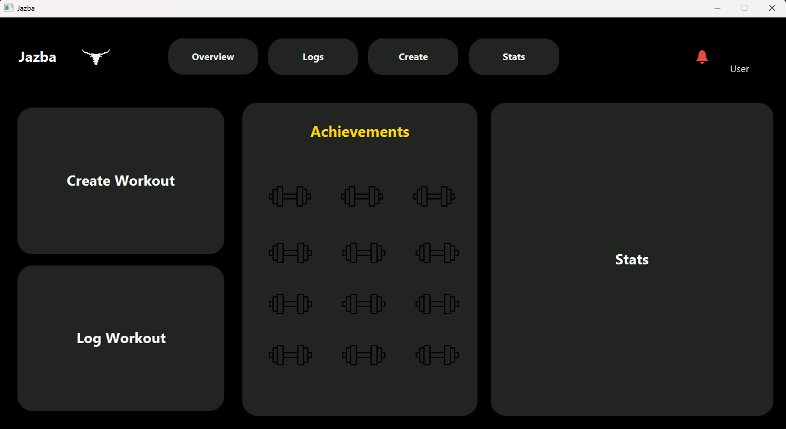
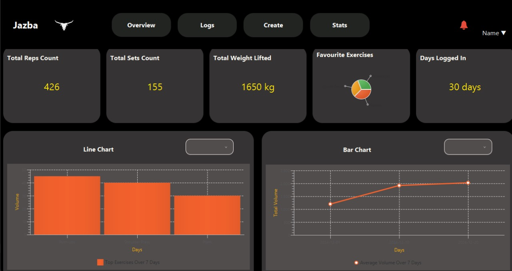

Jazba
Features:
- Admin Panel: Broadcast messages, notify users, manage reports, system logs, and user management.
- User Interface: Create and log workouts, select exercises, view stats, provide feedback, and manage profile settings.
- Workouts & Stats: Track exercise performance, view progress, and earn achievements.
Setup:
Requirements:
- Java 8 or higher
- JavaFX
- Database setup (e.g., MySQL or SQLite)
Installation:
- Clone the repository:
git clone https://github.com/umersanii/jazba.git - Build the project using your preferred IDE (e.g., IntelliJ IDEA or Eclipse) or command line.
- Run the
Jazba.javafile to start the application.
Screenshots:
| Stats GUI Screen | User Dashboard GUI Screen |
|---|---|
|  |  |